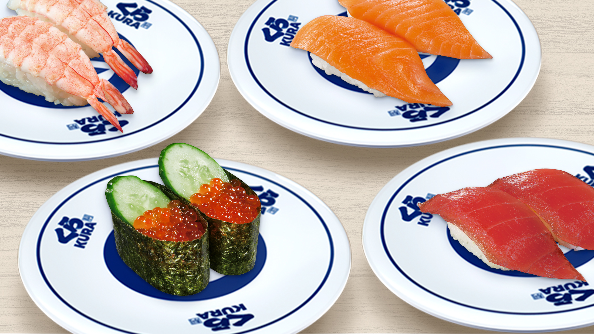
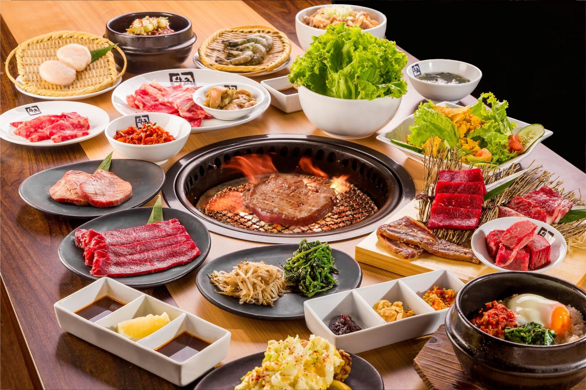
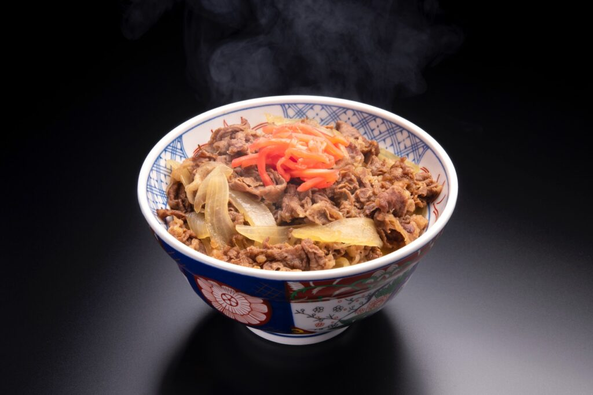

Kura Sushi
〒350-1101 Saitama, Kawagoe, Matoba, 833-1
Kurasushi is a famous chain of conveyor belt sushi restaurants with more than 500 locations throughout
Japan. Kura Sushi has featured decorations and menu items based on different characters.
Customers can get custom animations or win prizes during their dining experience
by inserting a certain number of plates into a receptacle.
Recommended Items: Beef Bowl topped with Kimchi and Cheese

Gyu-Kaku
〒350-1103 Saitama, Kawagoe, Kasumigasekihigashi, 1-7-2
Gyu-Kaku, meaning "Horn of the Bull" in Japanese, provides authentic Japanese yakiniku (grilled barbecue)
dining experience where customers share premium cooked meats over a flaming smokeless grill.
Gyu-Kaku offers a wide range of meats.
Recommended Items: Harami Skirt Steak and Prime Kalbi Short Rib.

Matsuya
〒350-1103 Saitama, Kawagoe, Kasumigasekihigashi, 1-2-22
‘Matsuya’ is very famous Gyudon restaurant chain in Japan. ‘Gyudon’
is very popular Japanese cuisine, beef and onions on rice in the bowl.
Student can dine-in ‘Gyudon’ in the restaurant and take it out with a
very reasonable price.
Recommended Items: Beef Bowl topped with Kimchi and Cheese
